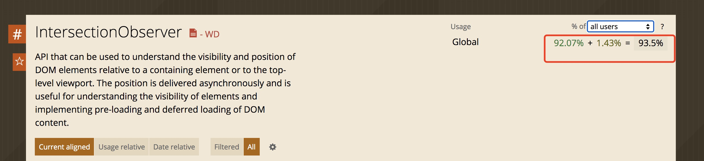
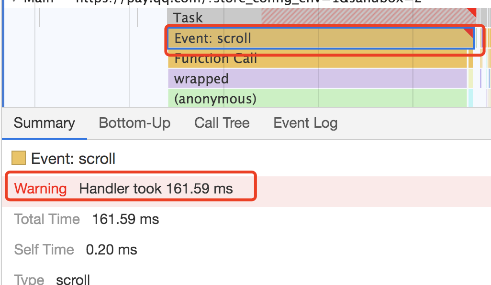
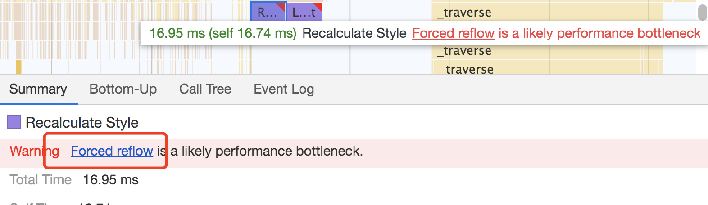

Intersection Observer的优点
之前我们监听一个元素是否进入可视区域，一般都是这么做：
1、监听 onscroll 事件
2、获得要监听元素的 getBoundingClientRect，获得坐标
3、判断是否在窗口内
上面方法2的替代方法还可能是，获得 scrollTop, offsetHeight, clientHeight这些值来以一定的方法计算判断是否在可视区域内。
过程中一般会利用 throttle 节流函数来避免 scroll回调的频繁执行。但是这些仍然避免不了scroll事件监听和调用 Element.getBoundingClientRect() 计算高度都是在主线程上运行，因此频繁触发、调用可能会造成性能问题。getBoundingClientRect还会触发浏览器的重绘或者重排，强制浏览器重新计算整个浏览器的布局。
Intersection Observer Api 提供了一种异步检测目标元素与祖先元素或 viewport 相交情况变化的方法。自从了解了这个接口后发现好像没有什么 onscroll 能解决的问题他解决不了，并且使用了他之后，还会觉得代码更好理解，因此把项目中很多地方的代码都换成这个Api，举例为：
1、吸顶实现
2、内容无限加载
3、图片懒加载
4、检测瀑布流图片曝光并上报
5、某个元素出现时出现动画或执行某项事情（如左侧列表字母锚点导航）
除了上述优点，Intersection Observer 还能监听元素交叉比例，比如瀑布流的图片漏出可视窗口的比例为0.3时，才被认为是真实曝光，才上报。使用传统的计算方法会比较繁琐，但是 Intersection Observer 定义好了相关参数，都可以比较方便的实现这些功能。
下面将具体介绍它以及具体场景。
兼容性
Intersection Observer Api的兼容性一般在94%左右，手机端的兼容性一般会稍微好点。但是有w3c的polyfill，所以不需要太担心。

在引用其他模块之前优先引用这个模块即可，代码示例如下：1
2
3npm install intersection-observer
require('intersection-observer')
Intersection Observer 定义
Intersection Observer API 允许你配置一个回调函数，每当目标(target)元素与设备视窗或者其他指定元素发生交集的时候执行。
用过它之后还没发现不能代替 onscroll 的场景，非常好用。
几个其他概念：
1、根元素（root）:设备视窗或者其他元素我们称它为根元素或根(root)。通常，您需要关注文档最接近的可滚动祖先元素的交集更改，如果元素不是可滚动元素的后代，则默认为设备视窗。如果要观察相对于根(root)元素的交集，请指定根(root)元素为null。
2、交叉比（intersection ratio）:目标(target)元素与根(root)元素之间的交叉度是交叉比。
示例如下：1
2
3
4
5
6
7
8
9
10
11
12
13
14
15
16
17// 目标节点在可视范围内时，去加载数据
let observer = new IntersectionObserver(entries => {
let isIntersecting = _.some(entries, entry => {
return entry.isIntersecting === true
})
if (isIntersecting) {
this.loadData()
}
}, {
root: document.querySelector('#scrollArea'),
rootMargin: '0px',
threshold: 0.1
})
const target = document.querySelector('#target')
observer.observe(target)
每个被监听到的entry还有以下一些属性：
entry.boundingClientRect目标元素的区域信息entry.intersectionRatio目标元素的可见比率entry.intersectionRect目标元素与根元素交叉的区域信息entry.isIntersecting是否进入可视区域entry.rootBounds根元素的矩形区域信息entry.target被观察的目标，是一个DOM节点entry.time可见性发生变化的时间,相交发生时距离页面打开时的毫秒数.精度为微秒
实际应用1-吸顶
场景：页面下部有个导航，需要当它滚动到到最上面时，才设置吸顶。
一般前端吸顶会用 position: sticky 实现，但是兼容性不太好，所以一般会让重构同学再写一个 position: fixed 的样式。
position: sticky比较丝滑，并且在大多数的浏览器上都支持，因此还是不能直接舍弃使用。所以通常的办法是：
判断浏览器是否支持 position: sticky 属性，支持时直接使用此样式，不支持时判断浏览器是否滚动到了顶部位置，若到了顶部位置，则直接使用position: fixed样式。
判断浏览器是否支持 sticky:1
2
3
4
5
6
7
8
9
10
11
12
13
14
15
16
17
18/**
* 判断浏览器是否支持 sticky
* @returns {boolean}
*/
function isPositionStickySupported() {
let vendorList = ["", "-webkit-", "-ms-", "-moz-", "-o-"],
vendorListLength = vendorList.length,
stickyElement = document.createElement("div")
for (let i = 0; i < vendorListLength; i++) {
stickyElement.style.position = vendorList[i] + "sticky"
if (stickyElement.style.position !== "") {
return true
}
}
return false
}
不支持 sticky 的情况下设置标识表明已经可以吸顶了（设置fixed样式）：1
2
3
4
5
6
7
8
9
10
11
12
13
14
15
16 // 观察导航
const tabObserver = new IntersectionObserver(
records => {
for (const record of records) {
const targetInfo = record.boundingClientRect
this.stickyMenu = targetInfo.top <= 0
}
},
{ threshold: [0] }
)
const tab = document.getElementById("tab")
tabObserver.observe(tab)
//stickyMenu ? 'class-fix' : ''
但是在实际尝试过程中发现，在绝大部分机器上都没问题，但是在一些很老旧的机器上，也正是因为Intersection Observer是异步的，他的执行时间是浏览器控制的不固定的。导致了有可能向上滑的很快时，吸顶还没有消失。用同样的onscroll试了下，也会有这个问题，但是没这么严重。
后面尝试了很多办法，最后选择了多设置几个 observer来减少监听不到，有时候回调没执行的问题。选取页面上其他和吸顶相关的节点，比如某些元素现时，一定吸顶是要消失的，给他们也设置 observer 即可。在过程中也看到了一些其他的人也遇到了这个问题，但是没有看到很好的解决方案。
1 | onMounted(() => { |
后面我去查了下，发现IntersectionObserver是采用requestIdleCallback()，即只有线程空闲下来，才会执行观察器。这个优先级算是很低了。它指定只有当一帧的末尾有空闲时间，才会执行回调函数。只有当当前帧运行时间小于16.66ms时，函数才会执行。否则就会推迟到下一帧,如果下一帧还是没有空闲就继续推迟到下一帧, 浏览器还规定了最大的延迟时间是100ms, 也就是在1ms-100ms之间回调一定会执行。
他比window.requestAnimationFrame()的优先级还要低，requestAnimationFrame指定它下次重绘之前调用指定的回调函数更新动画。也就是下一帧会执行。
如果真的很想知道某个时刻观察者到底有没有相交，可以使用 takeRecords 方法，他是同步的。他和异步的回调是冲突的，两者会互相排斥。如果回调先执行，则 takeRecords就是空的。如果先拿到 takeRecords的值，异步方法就不会先执行。
实际应用2-无限加载
无限加载的本质就是判断快到了底部时，去加载下一屏的数据，类似于分页。以前的做法通常是：1
2
3
4
5
6
7
8
9
10const documentEle = document.documentElement
const wHeight = documentEle.clientHeight
window.addEventListener('scroll', () => {
const scrollTop = documentEle.scrollTop || document.body.scrollTop
const dHeight = documentEle.offsetHeight
if (dHeight - scrollTop - wHeight <= 15) {
this.loadNextPage()
}
})
现在有了Intersection Observer后，就容易多了：
可以在页面尾部放一个空的横线, 当这个横线出现在可视区域时，就去加载下一屏数据。
类似于：1
<div style="visibility: hidden; height: 1px; position: relative; top: -400px" id="archer"></div>
如果想要做到更好的体验，提前加载，就可以把这个横线稍微定位一下，放到尾部的往上的一些位置，可以做到提前加载。
1 | const observer = new IntersectionObserver(entries => { |
这里有个小坑，就是这个横线必须有高度，否则在某些手机（版本比较老的浏览器）上，就会监听不到❌。
惰性加载（懒加载）
懒加载和惰性加载的思路也是一样的，差不多就是等到元素滚动到了一定地步的时候，再把真实的图片替换上去或者把真实的dom添加上去。
比如图片懒加载，可以先把所有的图片 src 赋值给一个 default.png，等到了可视区域时，在把真实的图片的 src 赋值给图片本身。自己写跟上面的思路一样。没有太大的改变。
但是在过程中，我刚好发现了之前用的一个图片懒加载的一个vuelazyload 的 npm 库，竟然也支持 observer 选项。如下所示
1 | require("intersection-observer") |
设置了 observer: true后，也就自然使用了IntersectionObserver了。
其他方法和属性
1 | // 实例属性 |
unobserve的一个可能用到的场景是，比如要上报用户看到了哪些广告或者看到了瀑布流中哪些元素，当你上报了后，产品实际需求可能是在本页面内不需要多次上报，因此可以在第一次监听到用户浏览并且上报后，unobserve这个元素。这样可以减少后续监听的对象。
总结
单单从手感上来说，对于一般的性能手机来看体验并没有太大的差别，放到比较老旧的手机上，会发现intersection observer的更流畅点。
后面通过performance性能面板也能明显看到Painting和Rendering的时间减少，并且也不会频繁有诸如下面这类warning提示了：

由于也不会一直去使用计算属性（如：getBoundingClientRect），所以也不会出现类似下面的性能报错：

除去性能外，也不用再去写监听事件、不用再去计算各种高度，API简洁清晰好用，这个可能是后续遇到任何需要onscroll实现的功能，会考虑优先Intersection Observer的原因之一。